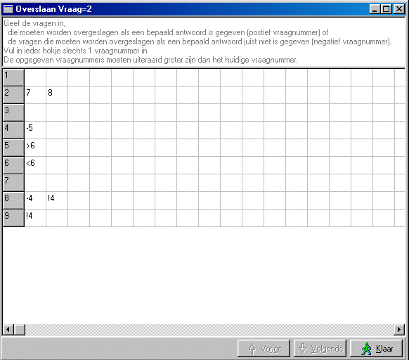

Conditioneel vragen overslaan
Per antwoord kan worden opgegeven welke (volgende) vragen moeten worden overgeslagen, als een bepaald antwoord juist wel of juist niet is gekozen.
Het is nu ook mogelijk zeer veel vragen over te slaan, door het zogenaamde "ga naar vraag.." statement.
Daarnaast is het mogelijk één of meer vragen over te slaan als een aantal vragen (op meerdere pagina's) NIET beantwoord zijn.
Deze mogelijkheden zijn alleen bij die vragen aanwezig, waarbij dat zinvol is, momenteel zijn dat
- meerkeuze, 1 antwoord
- meerkeuze, meer antwoorden
- blokvraag
- kindervraag
Het instellen van de overslaan condities gaat als volgt:
- selekteer de vraag, welke de oorzaak moet zijn van het overslaan
- selekteer een antwoord (dit is nodig om het juiste popup te laten verschijnen)
- klik met de rechtermuistoets op het geselecteerde antwoord
- selekteer in het popup menu "overslaan"
Nu verschijnt het onderstaande instelvenster

De meest linker kolom bevat de nummers van de mogelijke antwoorden. In de kolommen rechts hiervan, kunnen de vragen worden opgegeven welke moeten worden overgeslagen.
Betekenis van het getoonde voorbeeld
|
Antwoord 2: 7,8 |
Als antwoord 2 is gegeven, worden vragen 7 en 8 overgeslagen |
|
Antwoord 4: -5 |
Als antwoord 4 NIET is gegeven, wordt vraag 5 overgeslagen. |
|
Antwoord 5: >6 |
Als antwoord 5 is gegeven, wordt direct (na het geheel beantwoorden van deze vraag/pagina) doorgesprongen naar vraag 6 en worden alle tussengelegn vragen overgeslagen. |
|
Antwoord 6: <6 |
Als antwoord 5 NIET is gegeven, wordt direct (na het geheel beantwoorden van deze vraag/pagina) doorgesprongen naar vraag 6 en worden alle tussengelegn vragen overgeslagen. |
|
Antwoord 8: -4 , !4 |
Hiermee kan een vraag worden overgeslagen als een helehoop antwoorden NIET zijn gegeven. Het eerste van deze helehoop vragen moet altijd 2 statements bevatten,
|
|
Antwoord 9: !4 |
De volgende van de "helehoop" vragen: !4 betekent dus, sla vraag 4 NIET over als antwoord 9 is gegeven. |
LET OP: er mag slechts 1 vraagnummer per hokje worden opgegegeven.
Een Positief vraagnummer: de aangegeven vraag wordt overgeslagen als dit antwoord is gegeven.
Een Negatief vraagnummer: de vraag wordt overgeslagen als dit antwoord niet is gegeven.
Uiteraard kunnen alleen vragen worden opgegeven, die een hoger nummer dan de huidige vraag hebben.
Instellen overslaan bij blokvragen 
Bij het instellen van een blokvraag dient men zich te realiseren dat een blokvraag in feite een verzameling van meerdere vragen is. Dus per schermregel staat een volledige vraag met antwoorden (subvraag). En dus kan men de overslaan oorzaken per regel verschillend instellen.
Bij blokvragen verschijnt onderin het overslaan instelformulier een extra aankruisvakje "Overslaan condities laten gelden voor alle subvragen". Hiermee kan men dus één instelling voor alle subvragen op deze pagina laten gelden. Als dit aankruisvakje wordt aangekruist, dan wordt om een extra bevestiging gevraagd, dit omdat alle subvragen op deze pagina hun individuele overslaan instellingen verliezen.
Wil men het grootste deel van de subvragen een gelijke overslaan conditie geven en enkele subvragen extra condities, dan kan men als volgt te werk gaan
- geef bij 1 van de subvragen de algemene conditie in
- laat deze conditie gelden voor alle subvragen
- overtuig u dat dit goed is
- bewerk nu de subvragen die extra conditie krijgen
In de toekomst zal het mogelijk worden om via het print commando een overzicht te krijgen van de ingestelde overslaan condities.
© Copyright Instrumentele Dienst, 1999-2004